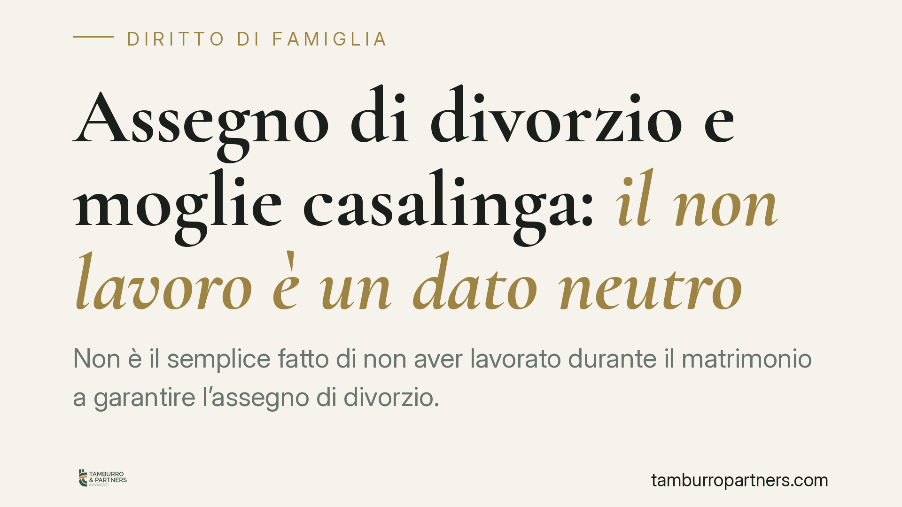

Assegno di divorzio e moglie casalinga: il non lavoro è un dato neutro
Non è il semplice fatto di non aver lavorato durante il matrimonio a garantire l'assegno di divorzio. Per la Cassazione quel dato è neutro: va dimostrato il sacrificio concreto di occasioni professionali e il contributo offerto al patrimonio o alla carriera dell'altro coniuge. Senza prova, nessun diritto automatico. Un chiarimento che pesa sulla strategia difensiva di chi chiede e di chi resiste.

Il caso
Una ex moglie, casalinga per l'intera durata del matrimonio, si vede negare l'assegno divorzile. La Corte d'Appello esclude il diritto; la Corte di Cassazione conferma. Il principio è netto: aver rinunciato a lavorare non costituisce, di per sé, titolo per ottenere un contributo economico dopo il divorzio.
La decisione non introduce una regola nuova, ma consolida un'impostazione ormai stabile. Vale la pena ricostruirla, perché incide direttamente su come va impostata la domanda.
Inquadramento normativo
La materia è regolata dall'art. 5, comma 6, della L. 898/1970 (legge sul divorzio). La norma prevede l'assegno quando un coniuge non ha mezzi adeguati e non può procurarseli per ragioni oggettive, tenuto conto — tra l'altro — del contributo personale ed economico dato da ciascuno alla conduzione familiare e alla formazione del patrimonio comune.
Le Sezioni Unite, con la sentenza n. 18287/2018, hanno definito la natura composita dell'assegno. Non è solo uno strumento di sostegno, ma assolve a una triplice funzione:
- assistenziale: sopperire alla mancanza di mezzi adeguati del coniuge più debole;
- compensativa-perequativa: riconoscere il contributo dato alla vita familiare e alla crescita del patrimonio o della carriera dell'altro.
Il punto decisivo è che queste due componenti non coincidono. Un coniuge può trovarsi in difficoltà economica (profilo assistenziale) senza che ciò comporti automaticamente il diritto a una somma a titolo compensativo.
Il "dato neutro" del non lavoro
Qui sta il cuore della pronuncia. Il fatto di non aver svolto attività lavorativa durante il matrimonio è, in sé, un dato neutro: non prova nulla e non fonda alcun diritto.
Il non lavoro può dipendere da una scelta condivisa di dedicarsi alla famiglia, oppure da ragioni del tutto estranee all'organizzazione del ménage coniugale. Solo nel primo caso emerge quel sacrificio di aspettative professionali che la funzione compensativa è chiamata a riconoscere.
Per ottenere l'assegno nella sua dimensione perequativa occorre quindi dimostrare, in concreto:
- di aver rinunciato a occasioni di lavoro o di sviluppo professionale;
- che tale rinuncia era funzionale alle esigenze della famiglia;
- che da quel contributo è derivato un vantaggio al patrimonio o alla carriera dell'altro coniuge.
La prova può essere raggiunta anche per presunzioni, ai sensi dell'art. 2729 c.c.: ma servono elementi gravi, precisi e concordanti, non affermazioni generiche. Non basta dire "ho sempre accudito la casa"; occorre collegare quel ruolo a una scelta e a un risultato.
Implicazioni pratiche
Per chi chiede l'assegno, cambia il peso dell'onere probatorio. L'allegazione del ruolo domestico non è più sufficiente: va costruita una narrazione documentata del percorso di coppia, delle rinunce effettuate e dei benefici che ne sono derivati all'altro.
Per chi resiste alla domanda, la pronuncia offre una leva difensiva precisa: contestare la neutralità del dato lavorativo e sollecitare la prova rigorosa del nesso tra rinuncia e vantaggio.
L'equilibrio tra le due componenti resta centrale. Un coniuge economicamente fragile potrà ancora vedersi riconosciuto l'assegno in funzione assistenziale; ma la componente compensativa richiede una dimostrazione autonoma e specifica.
Cosa fare in concreto
- Ricostruire il percorso professionale interrotto o mai avviato, raccogliendo elementi su offerte di lavoro, titoli di studio, prospettive abbandonate.
- Documentare il contributo alla famiglia e al patrimonio: gestione domestica, cura dei figli, supporto diretto all'attività dell'altro coniuge.
- Individuare i vantaggi concreti ottenuti dall'altro: avanzamenti di carriera, incrementi patrimoniali, risparmi resi possibili dall'organizzazione familiare.
- Costruire l'istruttoria già in fase di negoziazione, valutando per tempo la sostenibilità della pretesa anziché affidarla al solo giudizio.
- Distinguere con nettezza, negli atti, la domanda assistenziale da quella compensativa, argomentandole su presupposti diversi.
Nota sul riferimento giurisprudenziale
Il numero e l'anno dell'ordinanza citata nella fonte sono in corso di verifica presso la redazione. Il principio esposto riflette comunque l'orientamento consolidato della Cassazione in materia, coerente con l'impianto delle Sezioni Unite n. 18287/2018.
Contributo informativo a cura di Tamburro & Partners Avvocati – Avv. Giuseppe Tamburro. Non costituisce parere legale.
Ogni famiglia ha il suo equilibrio.
Separazione, divorzio, affidamento, assegno: se vuoi un confronto riservato su una specifica situazione, scrivi allo studio. Ti rispondiamo entro un giorno lavorativo.